<!DOCTYPE html>
<html lang="zh-tw">
    
<head>
    <meta charset="UTF-8">
    <meta name="viewport" content="width=device-width, initial-scale=1">
    <meta name="generator" content="Yee的補坑筆記">
    <title>Heroku - 快速部署python - Yee的補坑筆記</title>
    <meta name="author" content="Yee">
    
        <meta name="keywords" content="laravel,docker,">
    
    
    
    <script type="application/ld+json">{"@context":"http://schema.org","@type":"BlogPosting","author":{"@type":"Person","name":"Yee","sameAs":["mailto:amung966w@gmail.com"],"image":"yee.jpeg"},"articleBody":"當開發好小腳本或小工具時，\n我們可以來使用Heroku來建置執行的環境～～ \n\n\n為什麼選擇Heroku，\n因為他目前支援的語言也蠻多的，建置過程中也不會太麻煩，\n類似Git的方法就能部署，也可以串接github來自動部署。\n\n本文所採用的環境\b\n\nMax OSX 10.15\nHomebrew 2.2.5\nheroku/7.39.0 darwin-x64 node-v12.13.0\n\n本次沒有測過其他平台，windows官方有提供cli工具，至於linux大概也是裝指令吧！？\n準備好一個heroku的帳號\n\n首先我們先來裝heroku的指令這裡我一樣使用brew來安裝～ 讓子彈飛一下最後出現了brew的酒杯，順利完成安裝\n接著用treminal登入heroku吧！照著指令的提示，按下任意鍵就會跳出瀏覽器(我以為跟git一樣可以在treminal登入呢！)照著上面的流程後，就可以在treminal中順利的登入heroku了！\n這樣heroku的指令都會對應到heroku的帳號中，\n讓我們來開一個APP吧，可以用heroku create也可以登入到heroku建立，\n這裡我就到heroku中建立吧！建立完成後，到setting頁籤中找到Buildpacks的部分，\n這裡也是可以用指令去做，既然我們已經在後台了，就直接在這邊設定吧！\nBuildpacks我的理解是，設定app的語言，之後會在建立相關的檔案，讓app的環境建立起來我們這裡要用python，所以選擇python完成這些設定後，接著建置該app需要的環境，\nheroku的部署會使用到git指令，\n1234567mkdir trelloxlinecd trelloxlinegit initgit add -Agit commit -am &quot;Heroku&quot;&#x2F;&#x2F; 這裡的指令背後跟 git remote add ... 一樣，只是透過heroku指令去抓heroku git:remote -a trelloxline\n到這邊我想跟著官方的指令，應該會下git push heroku master，\n但… 事實沒那麼簡單，因為是第一次部署，我們需要先建立一個檔案，讓heroku幫我們部署App的環境，\n1pip3 freeze &gt; requirements.txt\n將我們本機端開發所使用到的套件…等都丟到requirements.txt這個檔案中，\n接著我們就可以進行部署拉～\n1git push heroku master\n登登登～ 這樣heroku就會幫我們初始化App，(為了測試環境是否成功，我們先建立個hello.py這個檔案，裡頭就寫個 print(&#39;Hello&#39;)\n然後一樣git add ….. ((省略git 步驟\n接著回到heroku的介面中，右上角這個more裡中，有終端機指令的選項，我們來測試看看檔案有沒有部署上去，老樣子先來個ls -al檔案都有順利上去，接著就是嘗試執行py了，python hello.py\nすばらし～～ \n這樣就可以部署自己做的py工具摟！！！\n\n後記\n之前上課的時候，就有用過heroku這工具，映像中當時git push就可以部署一個html or php，\n沒想到現在部署變得比較小麻煩些，不過可能也是因為要執行python，\nheroku必須知道本機端是用哪個版本的py、pip跟package，\n在部署過程中爬了一下文才綜合出解決的方法 @@\n","dateCreated":"2020-03-14T16:21:54+08:00","dateModified":"2020-03-20T14:08:56+08:00","datePublished":"2020-03-14T16:21:54+08:00","description":"當開發好小腳本或小工具時，\n我們可以來使用Heroku來建置執行的環境～～ ","headline":"Heroku - 快速部署python","image":[],"mainEntityOfPage":{"@type":"WebPage","@id":"https://yeeinhole.github.io/2020/03/14/heroku-python/"},"publisher":{"@type":"Organization","name":"Yee","sameAs":["mailto:amung966w@gmail.com"],"image":"yee.jpeg","logo":{"@type":"ImageObject","url":"yee.jpeg"}},"url":"https://yeeinhole.github.io/2020/03/14/heroku-python/","keywords":"devops, heroku, python, w3HexSchool"}</script>
    <meta name="description" content="當開發好小腳本或小工具時， 我們可以來使用Heroku來建置執行的環境～～">
<meta property="og:type" content="blog">
<meta property="og:title" content="Heroku - 快速部署python">
<meta property="og:url" content="https://yeeinhole.github.io/2020/03/14/heroku-python/index.html">
<meta property="og:site_name" content="Yee的補坑筆記">
<meta property="og:description" content="當開發好小腳本或小工具時， 我們可以來使用Heroku來建置執行的環境～～">
<meta property="og:locale" content="zh_TW">
<meta property="og:image" content="https://yeeinhole.github.io/image/heroku-python/heroku_install1.png">
<meta property="og:image" content="https://yeeinhole.github.io/image/heroku-python/heroku_install2.png">
<meta property="og:image" content="https://yeeinhole.github.io/image/heroku-python/heroku_login1.png">
<meta property="og:image" content="https://yeeinhole.github.io/image/heroku-python/heroku_login2.png">
<meta property="og:image" content="https://yeeinhole.github.io/image/heroku-python/heroku_login3.png">
<meta property="og:image" content="https://yeeinhole.github.io/image/heroku-python/heroku_login4.png">
<meta property="og:image" content="https://yeeinhole.github.io/image/heroku-python/heroku_cerate.png">
<meta property="og:image" content="https://yeeinhole.github.io/image/heroku-python/heroku_buildpacks1.png">
<meta property="og:image" content="https://yeeinhole.github.io/image/heroku-python/heroku_buildpacks2.png">
<meta property="og:image" content="https://yeeinhole.github.io/image/heroku-python/heroku_git_push.png">
<meta property="og:image" content="https://yeeinhole.github.io/image/heroku-python/heroku_index.png">
<meta property="og:image" content="https://yeeinhole.github.io/image/heroku-python/heroku_console1.png">
<meta property="og:image" content="https://yeeinhole.github.io/image/heroku-python/heroku_console2.png">
<meta property="og:image" content="https://yeeinhole.github.io/image/heroku-python/heroku_console3.png">
<meta property="article:published_time" content="2020-03-14T08:21:54.000Z">
<meta property="article:modified_time" content="2020-03-20T06:08:56.319Z">
<meta property="article:author" content="Yee">
<meta property="article:tag" content="devops">
<meta property="article:tag" content="heroku">
<meta property="article:tag" content="python">
<meta property="article:tag" content="w3HexSchool">
<meta name="twitter:card" content="summary">
<meta name="twitter:image" content="https://yeeinhole.github.io/image/heroku-python/heroku_install1.png">
    
    
        
    
    
        <meta property="og:image" content="https://yeeinhole.github.io/assets/images/yee.jpeg"/>
    
    
    
    
    <!--STYLES-->
    
<link rel="stylesheet" href="/assets/css/style-2lqfypdcngq7rgk11flmhgs30biseha2s4rv2frat5edalqervoqqqtncnuh.min.css">

    <!--STYLES END-->
    

    

    
        
    
</head>

    <body>
        <div id="blog">
            <!-- Define author's picture -->


    
        
            
        
    

<header id="header" data-behavior="4">
    <i id="btn-open-sidebar" class="fa fa-lg fa-bars"></i>
    <div class="header-title">
        <a
            class="header-title-link"
            href="/"
            aria-label=""
        >
            Yee的補坑筆記
        </a>
    </div>
    
        
            <a
                class="header-right-picture "
                href="#about"
                aria-label="打開鏈接: /#about"
            >
        
        
            
        
        </a>
    
</header>

            <!-- Define author's picture -->


        
    

<nav id="sidebar" data-behavior="4">
    <div class="sidebar-container">
        
            <div class="sidebar-profile">
                <a
                    href="/#about"
                    aria-label="閱讀有關作者的更多信息"
                >
                    
                </a>
                <h4 class="sidebar-profile-name">Yee</h4>
                
                    <h5 class="sidebar-profile-bio"><p>Hi 我是 Yee，常常不小心就掉進坑中…</p>
</h5>
                
            </div>
        
        
            <ul class="sidebar-buttons">
            
                <li class="sidebar-button">
                    
                        <a  class="sidebar-button-link "
                             href="https://yeeinhole.github.io/"
                            title="首頁"
                        >
                    
                        <i class="sidebar-button-icon fa fa-home" aria-hidden="true"></i>
                        <span class="sidebar-button-desc">首頁</span>
                    </a>
            </li>
            
                <li class="sidebar-button">
                    
                        <a  class="sidebar-button-link "
                             href="/all-categories"
                            
                            title="分類"
                        >
                    
                        <i class="sidebar-button-icon fa fa-bookmark" aria-hidden="true"></i>
                        <span class="sidebar-button-desc">分類</span>
                    </a>
            </li>
            
                <li class="sidebar-button">
                    
                        <a  class="sidebar-button-link "
                             href="/all-tags"
                            
                            title="標籤"
                        >
                    
                        <i class="sidebar-button-icon fa fa-tags" aria-hidden="true"></i>
                        <span class="sidebar-button-desc">標籤</span>
                    </a>
            </li>
            
                <li class="sidebar-button">
                    
                        <a  class="sidebar-button-link "
                             href="/all-archives"
                            
                            title="所有文章"
                        >
                    
                        <i class="sidebar-button-icon fa fa-archive" aria-hidden="true"></i>
                        <span class="sidebar-button-desc">所有文章</span>
                    </a>
            </li>
            
                <li class="sidebar-button">
                    
                        <a  class="sidebar-button-link "
                             href="/friend"
                            
                            title="友情連結"
                        >
                    
                        <i class="sidebar-button-icon fas fa-link" aria-hidden="true"></i>
                        <span class="sidebar-button-desc">友情連結</span>
                    </a>
            </li>
            
                <li class="sidebar-button">
                    
                        <a  class="sidebar-button-link "
                             href="#about"
                            
                            title="關於"
                        >
                    
                        <i class="sidebar-button-icon fa fa-question" aria-hidden="true"></i>
                        <span class="sidebar-button-desc">關於</span>
                    </a>
            </li>
            
        </ul>
        
            <ul class="sidebar-buttons">
            
                <li class="sidebar-button">
                    
                        <a  class="sidebar-button-link " href="mailto:amung966w@gmail.com" target="_blank" rel="noopener" title="Email">
                    
                        <i class="sidebar-button-icon fa fa-envelope" aria-hidden="true"></i>
                        <span class="sidebar-button-desc">Email</span>
                    </a>
            </li>
            
        </ul>
        
    </div>
</nav>

            
            <div id="main" data-behavior="4"
                 class="
                        hasCoverMetaIn
                        ">
                
<article class="post">
    
    
        <div class="post-header main-content-wrap text-left">
    
        <h1 class="post-title">
            Heroku - 快速部署python
        </h1>
    
    
        <div class="post-meta">
    <time datetime="2020-03-14T16:21:54+08:00">
	
		    3月 14, 2020
    	
    </time>
    
        <span>分類 </span>
        
    <a class="category-link" href="/categories/devops/">devops</a>


    
</div>

    
</div>

    
    <div class="post-content markdown">
        <div class="main-content-wrap">
            <p>當開發好小腳本或小工具時，</p>
<p>我們可以來使用Heroku來建置執行的環境～～ </p>
<a id="more"></a>

<p>為什麼選擇Heroku，</p>
<p>因為他目前支援的語言也蠻多的，建置過程中也不會太麻煩，</p>
<p>類似Git的方法就能部署，也可以串接github來自動部署。</p>
<hr>
<p>本文所採用的環境<br></p>
<ol>
<li>Max OSX 10.15</li>
<li>Homebrew 2.2.5</li>
<li>heroku/7.39.0 darwin-x64 node-v12.13.0</li>
</ol>
<p>本次沒有測過其他平台，windows官方有提供cli工具，至於linux大概也是裝指令吧！？</p>
<p>準備好一個heroku的帳號</p>
<hr>
<p>首先我們先來裝heroku的指令<br>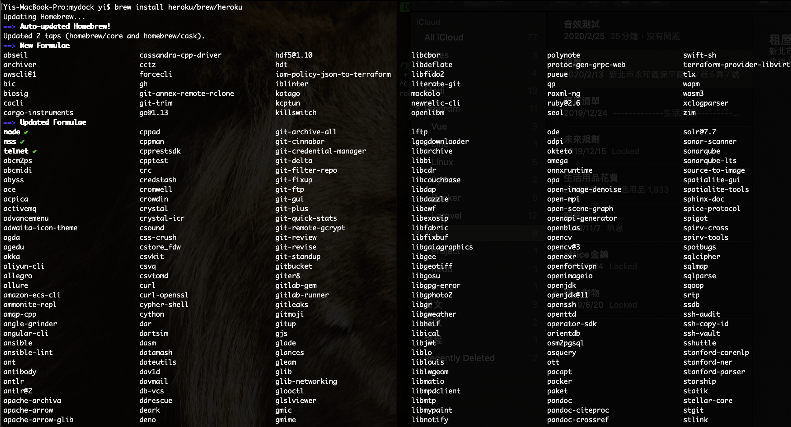<br>這裡我一樣使用brew來安裝～ 讓子彈飛一下<br>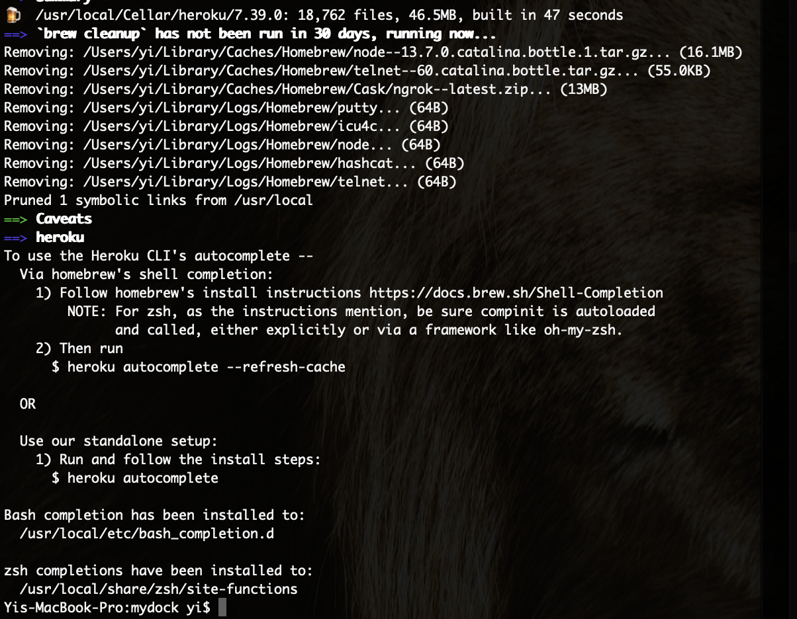<br>最後出現了brew的酒杯，順利完成安裝</p>
<p>接著用treminal登入heroku吧！<br>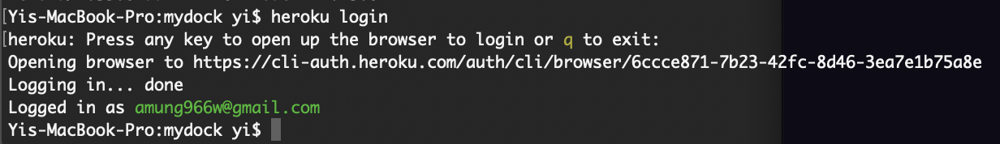<br>照著指令的提示，按下任意鍵就會跳出瀏覽器(我以為跟git一樣可以在treminal登入呢！)<br><br><br>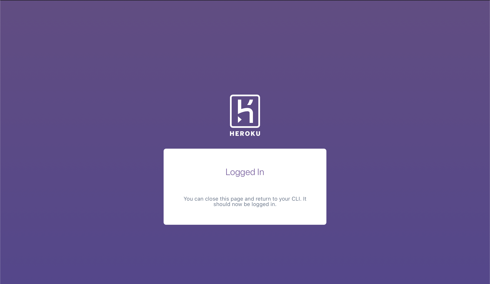<br>照著上面的流程後，就可以在treminal中順利的登入heroku了！</p>
<p>這樣heroku的指令都會對應到heroku的帳號中，</p>
<p>讓我們來開一個APP吧，可以用<code>heroku create</code>也可以登入到heroku建立，</p>
<p>這裡我就到heroku中建立吧！<br>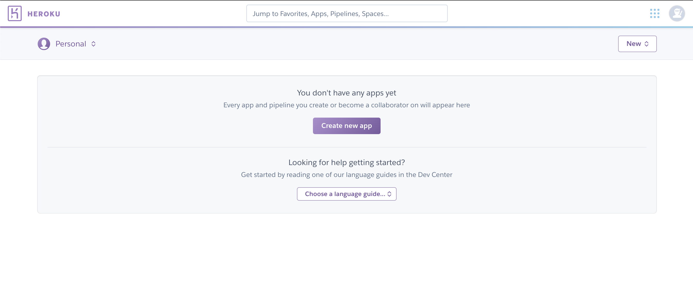<br>建立完成後，到setting頁籤中找到Buildpacks的部分，</p>
<p>這裡也是可以用指令去做，既然我們已經在後台了，就直接在這邊設定吧！</p>
<p>Buildpacks我的理解是，設定app的語言，之後會在建立相關的檔案，讓app的環境建立起來<br>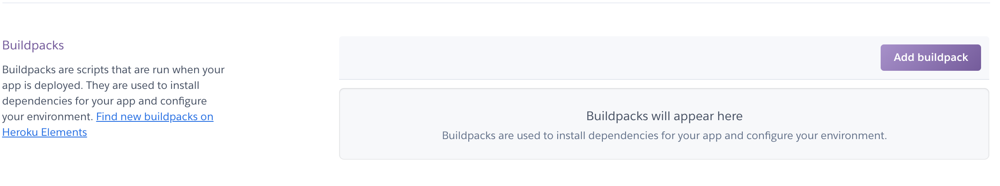<br>我們這裡要用python，所以選擇python<br>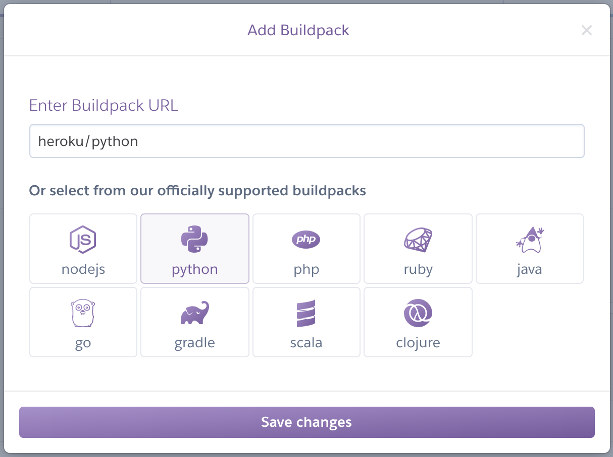<br>完成這些設定後，接著建置該app需要的環境，</p>
<p>heroku的部署會使用到git指令，</p>
<figure class="highlight plain"><table><tr><td class="gutter"><pre><span class="line">1</span><br><span class="line">2</span><br><span class="line">3</span><br><span class="line">4</span><br><span class="line">5</span><br><span class="line">6</span><br><span class="line">7</span><br></pre></td><td class="code"><pre><span class="line">mkdir trelloxline</span><br><span class="line">cd trelloxline</span><br><span class="line">git init</span><br><span class="line">git add -A</span><br><span class="line">git commit -am &quot;Heroku&quot;</span><br><span class="line">&#x2F;&#x2F; 這裡的指令背後跟 git remote add ... 一樣，只是透過heroku指令去抓</span><br><span class="line">heroku git:remote -a trelloxline</span><br></pre></td></tr></table></figure>
<p>到這邊我想跟著官方的指令，應該會下<code>git push heroku master</code>，</p>
<p>但… 事實沒那麼簡單，因為是第一次部署，我們需要先建立一個檔案，讓heroku幫我們部署App的環境，</p>
<figure class="highlight plain"><table><tr><td class="gutter"><pre><span class="line">1</span><br></pre></td><td class="code"><pre><span class="line">pip3 freeze &gt; requirements.txt</span><br></pre></td></tr></table></figure>
<p>將我們本機端開發所使用到的套件…等都丟到<code>requirements.txt</code>這個檔案中，</p>
<p>接著我們就可以進行部署拉～</p>
<figure class="highlight plain"><table><tr><td class="gutter"><pre><span class="line">1</span><br></pre></td><td class="code"><pre><span class="line">git push heroku master</span><br></pre></td></tr></table></figure>
<p>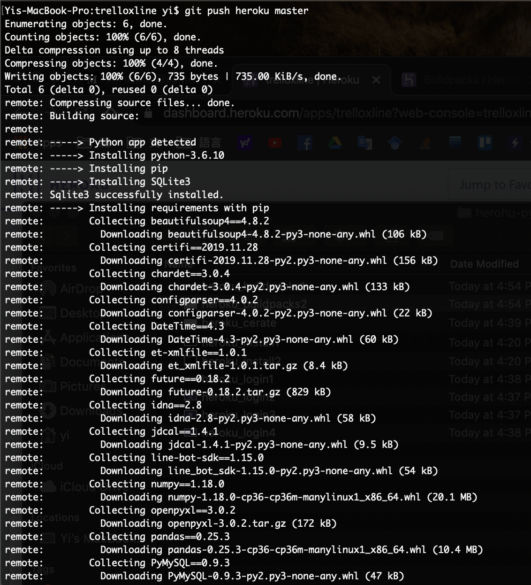<br>登登登～ 這樣heroku就會幫我們初始化App，<br>(<br>為了測試環境是否成功，我們先建立個hello.py這個檔案，裡頭就寫個 <code>print(&#39;Hello&#39;)</code></p>
<p>然後一樣git add ….. ((省略git 步驟</p>
<p>接著回到heroku的介面中，<br>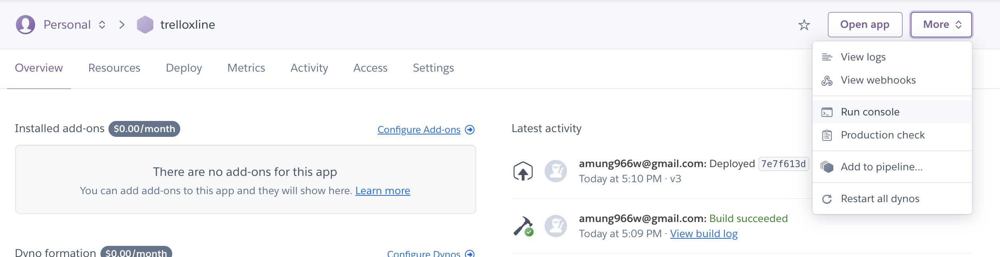<br>右上角這個more裡中，有終端機指令的選項，我們來測試看看檔案有沒有部署上去，<br>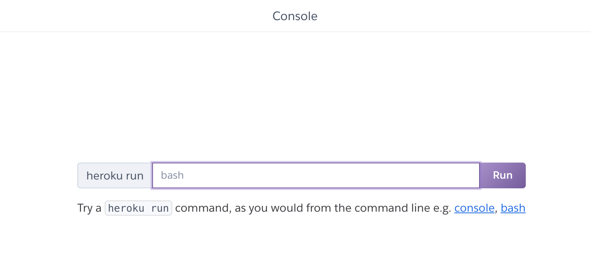<br>老樣子先來個ls -al<br>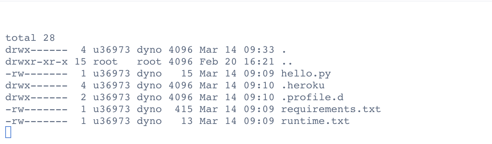<br>檔案都有順利上去，接著就是嘗試執行py了，<code>python hello.py</code><br>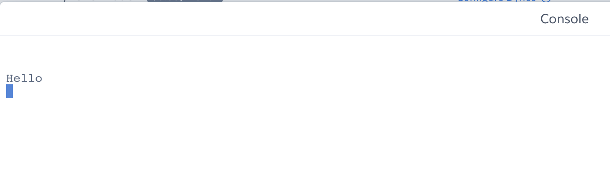</p>
<p>すばらし～～ </p>
<p>這樣就可以部署自己做的py工具摟！！！</p>
<hr>
<p>後記</p>
<p>之前上課的時候，就有用過heroku這工具，映像中當時git push就可以部署一個html or php，</p>
<p>沒想到現在部署變得比較小麻煩些，不過可能也是因為要執行python，</p>
<p>heroku必須知道本機端是用哪個版本的py、pip跟package，</p>
<p>在部署過程中爬了一下文才綜合出解決的方法 @@</p>

            


        </div>
    </div>
    <div id="post-footer" class="post-footer main-content-wrap">
        
            <div class="post-footer-tags">
                <span class="text-color-light text-small">標籤</span><br/>
                
    <a class="tag tag--primary tag--small t-link" href="/tags/devops/" rel="tag">devops</a> <a class="tag tag--primary tag--small t-link" href="/tags/heroku/" rel="tag">heroku</a> <a class="tag tag--primary tag--small t-link" href="/tags/python/" rel="tag">python</a> <a class="tag tag--primary tag--small t-link" href="/tags/w3HexSchool/" rel="tag">w3HexSchool</a>

            </div>
        
        
            <div class="post-actions-wrap">
    <nav>
        <ul class="post-actions post-action-nav">
            <li class="post-action">
                
                    
                <a
                    class="post-action-btn btn btn--default tooltip--top"
                    href="/2020/03/20/heroku-trelloXline/"
                    data-tooltip="heroku - 自動執行python腳本"
                    aria-label="上一篇: heroku - 自動執行python腳本"
                >
                    
                        <i class="fa fa-angle-left" aria-hidden="true"></i>
                        <span class="hide-xs hide-sm text-small icon-ml">上一篇</span>
                    </a>
            </li>
            <li class="post-action">
                
                    
                <a
                    class="post-action-btn btn btn--default tooltip--top"
                    href="/2020/03/08/ngrok/"
                    data-tooltip="Ngrok - 再也不用擔心開發遇到Webhook"
                    aria-label="下一篇: Ngrok - 再也不用擔心開發遇到Webhook"
                >
                    
                        <span class="hide-xs hide-sm text-small icon-mr">下一篇</span>
                        <i class="fa fa-angle-right" aria-hidden="true"></i>
                    </a>
            </li>
        </ul>
    </nav>
    <ul class="post-actions post-action-share">
        <li class="post-action hide-lg hide-md hide-sm">
            <a
                class="post-action-btn btn btn--default btn-open-shareoptions"
                href="#btn-open-shareoptions"
                aria-label="Diesen Beitrag teilen"
            >
                <i class="fa fa-share-alt" aria-hidden="true"></i>
            </a>
        </li>
        
            
            
            <li class="post-action hide-xs">
                <a
                    class="post-action-btn btn btn--default"
                    target="new" href="https://www.facebook.com/sharer/sharer.php?u=https://yeeinhole.github.io/2020/03/14/heroku-python/"
                    title="分享到 Facebook"
                    aria-label="分享到 Facebook"
                >
                    <i class="fab fa-facebook" aria-hidden="true"></i>
                </a>
            </li>
        
            
            
            <li class="post-action hide-xs">
                <a
                    class="post-action-btn btn btn--default"
                    target="new" href="https://twitter.com/intent/tweet?text=https://yeeinhole.github.io/2020/03/14/heroku-python/"
                    title="分享到 Twitter"
                    aria-label="分享到 Twitter"
                >
                    <i class="fab fa-twitter" aria-hidden="true"></i>
                </a>
            </li>
        
            
            
            <li class="post-action hide-xs">
                <a
                    class="post-action-btn btn btn--default"
                    target="new" href="https://plus.google.com/share?url=https://yeeinhole.github.io/2020/03/14/heroku-python/"
                    title="分享到 Google+"
                    aria-label="分享到 Google+"
                >
                    <i class="fab fa-google-plus" aria-hidden="true"></i>
                </a>
            </li>
        
        
            
        
        <li class="post-action">
            
                <a class="post-action-btn btn btn--default" href="#" aria-label="Nach oben">
            
                <i class="fa fa-list" aria-hidden="true"></i>
            </a>
        </li>
    </ul>
</div>


        
        
            
        
    </div>
</article>


                <footer id="footer" class="main-content-wrap">
    <span class="copyrights">
        Copyrights &copy; 2020 Yee. All Rights Reserved.
    </span>
</footer>

            </div>
            
                <div id="bottom-bar" class="post-bottom-bar" data-behavior="4">
                    <div class="post-actions-wrap">
    <nav>
        <ul class="post-actions post-action-nav">
            <li class="post-action">
                
                    
                <a
                    class="post-action-btn btn btn--default tooltip--top"
                    href="/2020/03/20/heroku-trelloXline/"
                    data-tooltip="heroku - 自動執行python腳本"
                    aria-label="上一篇: heroku - 自動執行python腳本"
                >
                    
                        <i class="fa fa-angle-left" aria-hidden="true"></i>
                        <span class="hide-xs hide-sm text-small icon-ml">上一篇</span>
                    </a>
            </li>
            <li class="post-action">
                
                    
                <a
                    class="post-action-btn btn btn--default tooltip--top"
                    href="/2020/03/08/ngrok/"
                    data-tooltip="Ngrok - 再也不用擔心開發遇到Webhook"
                    aria-label="下一篇: Ngrok - 再也不用擔心開發遇到Webhook"
                >
                    
                        <span class="hide-xs hide-sm text-small icon-mr">下一篇</span>
                        <i class="fa fa-angle-right" aria-hidden="true"></i>
                    </a>
            </li>
        </ul>
    </nav>
    <ul class="post-actions post-action-share">
        <li class="post-action hide-lg hide-md hide-sm">
            <a
                class="post-action-btn btn btn--default btn-open-shareoptions"
                href="#btn-open-shareoptions"
                aria-label="Diesen Beitrag teilen"
            >
                <i class="fa fa-share-alt" aria-hidden="true"></i>
            </a>
        </li>
        
            
            
            <li class="post-action hide-xs">
                <a
                    class="post-action-btn btn btn--default"
                    target="new" href="https://www.facebook.com/sharer/sharer.php?u=https://yeeinhole.github.io/2020/03/14/heroku-python/"
                    title="分享到 Facebook"
                    aria-label="分享到 Facebook"
                >
                    <i class="fab fa-facebook" aria-hidden="true"></i>
                </a>
            </li>
        
            
            
            <li class="post-action hide-xs">
                <a
                    class="post-action-btn btn btn--default"
                    target="new" href="https://twitter.com/intent/tweet?text=https://yeeinhole.github.io/2020/03/14/heroku-python/"
                    title="分享到 Twitter"
                    aria-label="分享到 Twitter"
                >
                    <i class="fab fa-twitter" aria-hidden="true"></i>
                </a>
            </li>
        
            
            
            <li class="post-action hide-xs">
                <a
                    class="post-action-btn btn btn--default"
                    target="new" href="https://plus.google.com/share?url=https://yeeinhole.github.io/2020/03/14/heroku-python/"
                    title="分享到 Google+"
                    aria-label="分享到 Google+"
                >
                    <i class="fab fa-google-plus" aria-hidden="true"></i>
                </a>
            </li>
        
        
            
        
        <li class="post-action">
            
                <a class="post-action-btn btn btn--default" href="#" aria-label="Nach oben">
            
                <i class="fa fa-list" aria-hidden="true"></i>
            </a>
        </li>
    </ul>
</div>


                </div>
                
    <div id="share-options-bar" class="share-options-bar" data-behavior="4">
        <i id="btn-close-shareoptions" class="fa fa-times"></i>
        <ul class="share-options">
            
                
                
                <li class="share-option">
                    <a
                        class="share-option-btn"
                        target="new"
                        href="https://www.facebook.com/sharer/sharer.php?u=https://yeeinhole.github.io/2020/03/14/heroku-python/"
                        aria-label="分享到 Facebook"
                    >
                        <i class="fab fa-facebook" aria-hidden="true"></i><span>分享到 Facebook</span>
                    </a>
                </li>
            
                
                
                <li class="share-option">
                    <a
                        class="share-option-btn"
                        target="new"
                        href="https://twitter.com/intent/tweet?text=https://yeeinhole.github.io/2020/03/14/heroku-python/"
                        aria-label="分享到 Twitter"
                    >
                        <i class="fab fa-twitter" aria-hidden="true"></i><span>分享到 Twitter</span>
                    </a>
                </li>
            
                
                
                <li class="share-option">
                    <a
                        class="share-option-btn"
                        target="new"
                        href="https://plus.google.com/share?url=https://yeeinhole.github.io/2020/03/14/heroku-python/"
                        aria-label="分享到 Google+"
                    >
                        <i class="fab fa-google-plus" aria-hidden="true"></i><span>分享到 Google+</span>
                    </a>
                </li>
            
        </ul>
    </div>


            
        </div>
        


    
        
    

<div id="about">
    <div id="about-card">
        <div id="about-btn-close">
            <i class="fa fa-times"></i>
        </div>
        
            
        
            <h4 id="about-card-name">Yee</h4>
        
            <div id="about-card-bio"><p>Hi 我是 Yee，常常不小心就掉進坑中…</p>
</div>
        
        
            <div id="about-card-job">
                <i class="fa fa-briefcase"></i>
                <br/>
                <p>後端工程師 X 數據分系</p>

            </div>
        
        
            <div id="about-card-location">
                <i class="fa fa-map-marker-alt"></i>
                <br/>
                Taiwan
            </div>
        
    </div>
</div>

        
        
<div id="cover" style="background-image:url('/assets/images/mybg.jpg');"></div>
        <!--SCRIPTS-->

<script src="/assets/js/script-8jejpetz5mxyxxmlbiz3r2lqf5sdh34epoqgvwjmadigq9cpmb2rdlngp8ka.min.js"></script>

<!--SCRIPTS END-->


    


    </body>
</html>
